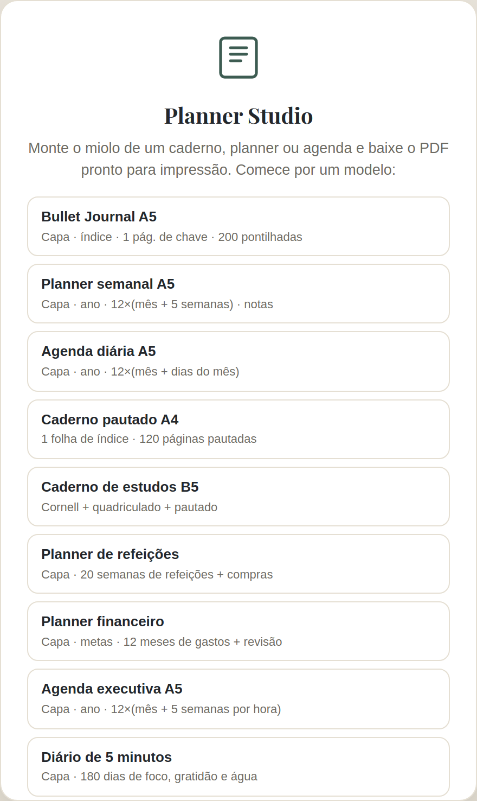
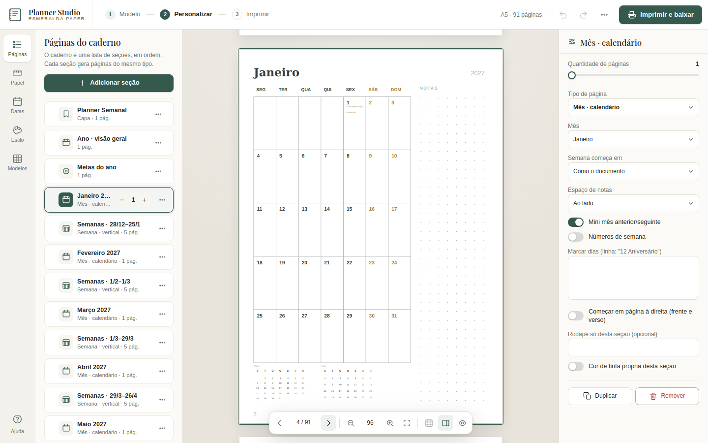
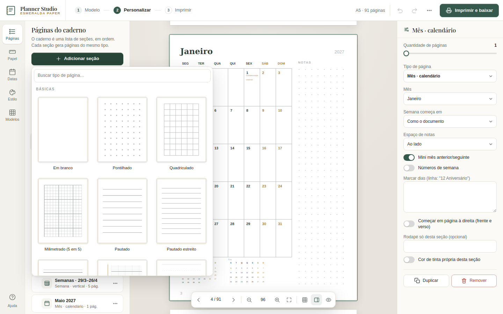
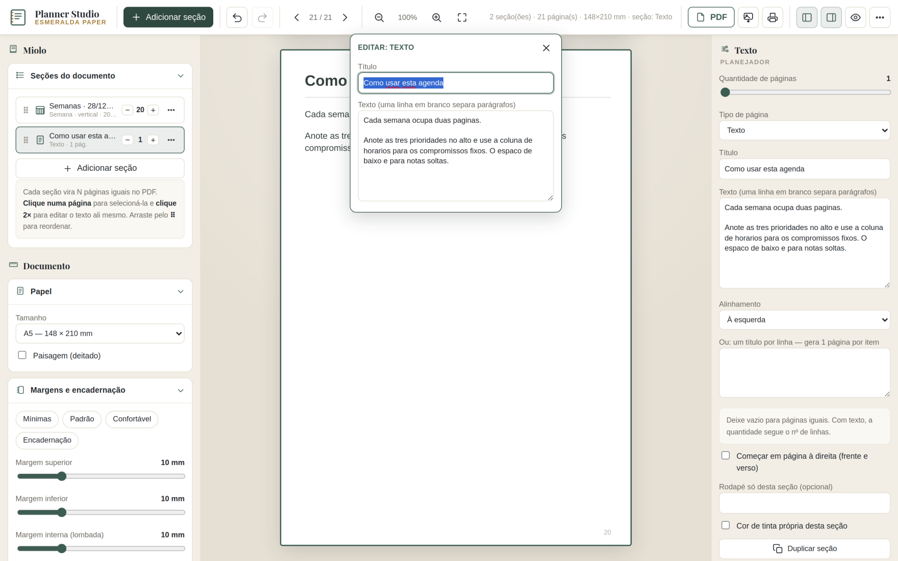
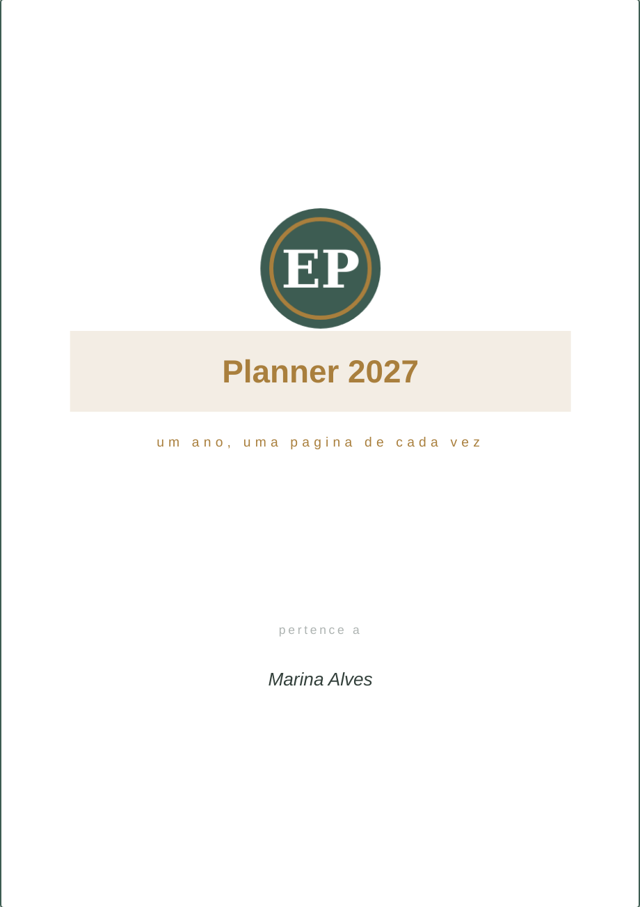
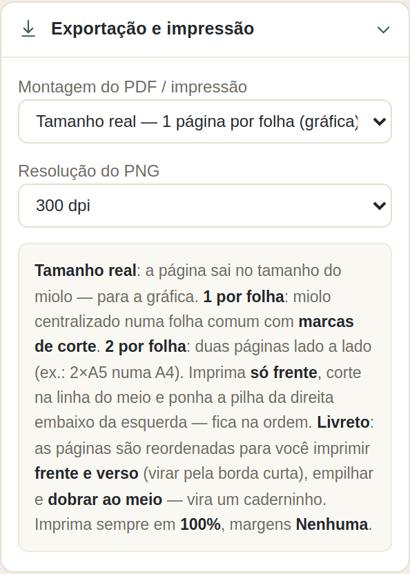

1. O que é
O Planner Studio gera o miolo (as páginas internas) de cadernos, planners e agendas: pontilhado, quadriculado, pautado, calendários, semanas, dias, hábitos, refeições, finanças e mais. O resultado é um PDF vetorial pronto para impressão — nítido em qualquer tamanho e com arquivo pequeno.
Tudo roda no seu navegador. Nada é enviado a nenhum servidor. Funciona offline.
A tela em 3 passos
A barra de cima mostra o caminho: 1 Modelo → 2 Personalizar → 3 Imprimir. Clique em qualquer passo para ir até ele.
- À esquerda, um trilho com abas — Páginas (as seções do caderno), Papel (tamanho, margens, encadernação), Datas (ano, feriados, eventos), Estilo (cores, fonte, numeração) e Modelos. Clicar na aba aberta recolhe o painel.
- No centro, as páginas como vão sair, com uma barra flutuante para navegar, dar zoom e ver todas as páginas em grade.
- À direita, os ajustes da seção selecionada (clique numa página ou numa seção da lista).
- O botão verde Imprimir e baixar abre a prévia da folha impressa, a escolha de como imprimir e o PDF pronto.
2. Começar por um modelo
Na tela inicial escolha um modelo — as miniaturas mostram a capa e uma página de dentro, do jeito que vão sair. Use os filtros Agendas, Planners e Cadernos para achar mais rápido. Cada modelo monta um documento completo (capa, calendários, páginas) que você ajusta à vontade. Prefere escolher cada detalhe? Montar passo a passo pergunta o tamanho, o ponto de partida, o texto da capa e a encadernação. Para voltar a esta tela depois, clique em 1 Modelo na barra.

3. Seções — o coração do miolo
O documento é uma lista de seções, na aba Páginas do painel esquerdo. Cada seção é um tipo de página repetido N vezes. Exemplo: Capa ×1, Índice ×4, Pontilhado ×180.
- + / − na seção muda a quantidade de páginas.
- Arraste pela alça ⠿ para reordenar.
- O menu ⋯ duplica ou remove.
- Clique na seção para abrir as opções dela no painel direito: espaçamento, cabeçalho, título, colunas, horários, data de início, e uma cor de tinta própria.

4. Tipos de página
Básicas: em branco, pontilhado, quadriculado, milimetrado, pautado (com linha de margem), isométrico, pentagrama, caligrafia, Cornell, lista de tarefas, página dividida.
Planejador: capa, divisória, índice, ano numa página, metas do ano, mês (calendário / lista de dias / hábitos), semana (vertical, horizontal, grade de horas), dia (agenda por hora, foco, 2 por página), refeições, gastos, projeto, revisão, listas de leitura, contatos, texto livre, frase / dedicatória, ano em cores (mood), rastreador mensal e registro de sono.
O mês · calendário aceita números de semana e marcação de dias — escreva uma linha por evento (12 Aniversário, ou 12/3 Aniversário só naquele mês) e ele aparece no dia.

Tipos que se montam sozinhos: Sumário automático (lista cada seção com o número da página em que ela começa), Dados pessoais (folha de rosto com campos editáveis), Semana · duas páginas (segunda a quarta na página da esquerda; quinta a domingo e notas na da direita, sempre abertas lado a lado) e Folha de calibração. Em Papel, Abas de mês na borda externa imprime abas laterais nas páginas com data, que sangram até o corte.
Formatos brasileiros: Universitário 200 × 275 mm, Brochura 140 × 200 mm e Desenho 275 × 200 mm, com modelos prontos. Com data inicial em agosto, a visão anual, as metas e os meses seguem o ano letivo (ago–jul).
Editar direto na folha
Na capa, na divisória e na frase, toque ou clique em qualquer texto ou imagem na própria página: aparece uma caixa de seleção. Arraste para mover (guias rosa aparecem quando o elemento fica centralizado), puxe uma alça do canto para mudar o tamanho e use a barra para trocar o texto, a fonte, o tamanho, a cor e o negrito, ou para centralizar, restaurar e ocultar. Com uma imagem de fundo, tocar nela abre o ajuste da foto ali mesmo: arraste para enquadrar, use pinça ou roda para zoom e ajuste brilho e filtros vendo o resultado na página. Em Elementos na folha, no painel da seção, dá para adicionar textos e imagens livres e mostrar de novo o que foi ocultado. No computador, as setas do teclado movem o elemento selecionado (Shift move 5 mm) e Delete oculta. Tudo sai igual no PDF.
Estilos de capa: 24 estilos, escolhidos numa galeria com a sua própria capa desenhada em cada um. Entre eles: moderna, botânica, geométrica, listras, etiqueta kraft, quadriculada, monograma grande, foto com cartão, ondas e pôr do sol.
Montar passo a passo (tela inicial): tipo de caderno, tamanho, capa (textos e estilo), cores e fonte, encadernação e onde vai imprimir, com a prévia real em cada passo e um resumo antes de criar.
5. Página personalizada (blocos)
Quando nenhum tipo pronto serve, use Adicionar seção → Meus blocos → Página personalizada e monte o layout do zero. No painel da seção, clique em Montar o layout para abrir o editor de tela cheia.
- Adicionar blocos: o botão Bloco na barra oferece texto, título, linhas pautadas, pontilhado, quadriculado, caixa (com cantos arredondados), tabela (linhas × colunas com cabeçalho), checklist, grade de horários, mini calendário, círculos de hábito, imagem/ornamento e divisor.
- Posicionar: arraste o bloco pelo corpo; use as 3 alças (direita, base, canto) para redimensionar. Tudo encaixa na grade em mm (ajuste o passo na barra). As setas do teclado movem; Shift+setas ajustam fino; Del remove; Ctrl+D duplica.
- Propriedades: o painel da direita mostra os controles do bloco selecionado (tamanho, cor, espessura, fonte, alinhamento…) e os campos X/Y/L/A em mm para posição exata. Frente/Trás muda a ordem de sobreposição.
- Variáveis dinâmicas nos blocos de texto:
{dia},{dia_semana},{mes},{ano},{semana_numero},{dia_do_ano},{dias_restantes},{pagina},{secao},{nome_dono},{feriado},{evento}e{campo:chave}(campos personalizados da seção). O botão { } ao lado de cada campo de texto insere a variável. - Datas por página: nas opções da seção, escolha 1 dia / 1 semana / 1 mês por página — as variáveis passam a mudar a cada página. Defina o começo em Começar em (AAAA-MM-DD) ou pelo Mês.
- Meus modelos: Salvar atual… guarda o layout com um nome neste navegador; Usar este aplica um modelo salvo a qualquer seção personalizada; Exportar / Importar .json levam o modelo para outro aparelho (o arquivo passa pela mesma validação de segurança).
O layout é desenhado vetor por vetor, igual aos tipos prontos — sai nítido no PDF e obedece às margens do documento.
6. Escrever e editar textos
Além de gerar linhas em branco, o Planner Studio deixa você preencher o conteúdo antes de imprimir:
- Direto na página: um clique (ou toque) numa página seleciona a seção dela; clicar/tocar de novo abre um editor de texto ali mesmo, com os campos daquele tipo. No celular o editor sobe como uma folha na base da tela.
- Página "Texto": digite um título e parágrafos — o texto quebra sozinho para caber e sai vetorial no PDF. Serve para introdução, instruções, dedicatória, um capítulo.
- Preencher listas: no Índice escreva
assunto | 12por linha; nas listas de leitura/filmes,título | autor; em metas do ano e hábitos do mês, um item por linha. Se as entradas não couberem, ele cria mais páginas sozinho. - Blocos por linha: em várias seções há o campo "um título por linha" — cada linha vira uma página com o título já posto (ex.: uma página por projeto, por matéria, por mês).
- Renomear rótulos: em Textos das páginas troque os textos fixos — NOTAS, TAREFAS, PRIORIDADES, GRATIDÃO, nomes das refeições, "Índice", "pertence a". Vazio = padrão.

Capa. A seção Capa tem 9 estilos (moldura, faixa, editorial, cantoneiras, minimalista…), posição do título, monograma e logo / imagem de fundo: escolha um arquivo do seu computador — ele é reduzido e redesenhado internamente (removendo EXIF/GPS) e fica só neste navegador. O logo tem tamanho e posição ajustáveis (entra inteiro, sem recorte). A imagem de fundo abre um editor — arraste pra posicionar, dê zoom, gire, espelhe e ajuste brilho/contraste/saturação/sépia/preto-e-branco antes de aplicar; o botão Reenquadrar reabre o mesmo ajuste depois, sem perder qualidade. Um controle à parte clareia o fundo pra manter o texto legível. Tudo sai embutido no PDF.

7. Papel, margens e encadernação
Na aba Papel do painel esquerdo:
- Papel: A3, A4, A5, A5 largo, A6, A7, B5, B6, Carta, Meia carta, Pocket, Traveler's, Weeks, quadrado ou medidas próprias.
- Começar em página à direita: nas opções de cada seção — insere uma folha em branco se preciso, para a seção abrir sempre numa página ímpar (frente).
- Margens: superior, inferior, interna (lombada) e externa. Os atalhos Mínimas / Padrão / Confortável / Encadernação preenchem as quatro de uma vez. Ligue Espelhar margens para impressão frente e verso — a margem da lombada troca de lado nas páginas pares. As linhas de pontilhado, quadriculado e pauta ficam centralizadas na área útil e nunca saem cortadas na borda, em qualquer margem.
- Encadernação: por padrão vem sem furos — o miolo carrega limpo. Ao escolher espiral, wire-o, discos ou fichário, a margem interna aumenta e aparece a guia de furos na tela; para marcar os furos no PDF, ligue a opção correspondente.
- Estimativa de anel: informe a gramatura e o tipo de papel do miolo — a linha de dica calcula quantas folhas físicas o documento tem, a espessura aproximada do miolo e sugere o diâmetro do anel wire-o (com o passo 3:1 ou 2:1) ou da espiral. É uma estimativa; confirme com o papel real antes de comprar.
- Espessura das linhas: em Cores, ajuste de 50% a 200% a força de todos os traços do miolo.
8. Datas automáticas e datas especiais
Defina o Ano da agenda e se a semana começa na segunda ou no domingo. Para uma agenda que não começa em 1º de janeiro (ano letivo, meio do ano), preencha o 1º dia da agenda (AAAA-MM-DD) — todas as seções de mês, semana e dia passam a contar a partir dessa data. As seções avançam sozinhas: uma seção "Mês ×12" vira janeiro…dezembro; "Semana ×52" cobre o ano; "Dia ×30" são 30 dias seguidos. A contagem segue a ordem das seções. Para fixar o começo de uma seção específica, preencha Começar em (AAAA-MM-DD) ou escolha o Mês nas opções dela. O destaque de fins de semana pode ser desligado.
Data automática: nas páginas simples (pautada, pontilhada, quadriculada, em branco, tarefas) ligue Data automática — cada página ganha uma data no alto (1 dia por página) e o resto fica livre para escrever à mão.
Datas especiais
Na aba Datas, em Feriados e datas especiais, você liga separadamente:
- Feriados nacionais — inclui os móveis (Sexta-feira Santa, Páscoa e, se marcar os facultativos, Carnaval e Corpus Christi), calculados no próprio aparelho.
- Pontos facultativos e datas comemorativas (Dia das Mães, Dia dos Pais, Namorados, Dia do Cliente, Black Friday…).
- Feriados estaduais de uma UF (ex.: 20 de setembro no RS).
- Eventos seus — cole uma linha por evento:
2026-03-15 Prova(data fixa) ou15/03 Aniversário(repete todo ano).
As marcas aparecem no mês · calendário, na semana vertical e no dia. Nas páginas por blocos, use {feriado} e {evento} em um bloco de texto, e o mini calendário destaca os dias marcados.
9. Cores, fonte e numeração
Paletas: os botões de Paleta, na aba Estilo, aplicam um conjunto pronto de tinta + destaque + fundo (Esmeralda, Grafite, Marinho, Ameixa, Floresta, Sépia, Preto e branco). Depois dá para ajustar cada cor à mão. Tinta é a cor de linhas e textos; Destaque pinta fins de semana e títulos. Cada seção pode sobrepor a tinta.
Fonte dos títulos (aba Estilo): sem serifa (padrão), com serifa (elegante) ou monoespaçada. Muda só os títulos; o corpo continua igual.
Número de página: canto externo, interno, centralizado ou nenhum. Você escolhe em que número começa a contar e quantas páginas iniciais pular (capa, índice), se mostra o total (12 / 208) e um prefixo opcional (“pág.”). O Rodapé em todas as páginas imprime um texto fixo discreto no pé de cada página; cada seção pode ter um rodapé próprio que substitui o global.
10. Exportar e imprimir
Clique em Imprimir e baixar (ou Ctrl+P). Abre uma janela com a prévia da folha como ela vai sair da impressora — com o número de cada página, a linha de corte ou dobra e frente/verso — e o resumo de quantas folhas vão ser gastas. Por padrão a montagem é Automático: um A5 sai 2 por folha A4 (frente e verso, é só cortar ao meio); A6, pocket e outros menores saem centralizados numa A4 com marcas de corte; A4 ou maior sai no tamanho exato. Para mudar, escolha outro cartão em Onde e como vai imprimir? — a prévia atualiza na hora e vale tanto para o PDF quanto para o botão Imprimir. Abaixo, Na hora de imprimir diz exatamente o que marcar na impressora, e a Verificação avisa de problemas antes (páginas reduzidas, livreto grosso demais, capa sem título…):

- Automático (padrão): escolhe sozinho o melhor aproveitamento da folha — 2 por folha, 1 por folha com corte ou tamanho exato — conforme o papel.
- Tamanho real (para gráfica): cada página do PDF sai exatamente no tamanho do miolo (mais a sangria, se houver). A gráfica imprime e refila. Uma página por folha.
- 1 por folha + marcas de corte: o miolo vem centralizado na folha escolhida (A4, Carta ou A3), com marcas de corte nos quatro cantos. Imprima em 100% e recorte pelas marcas.
- 2 por folha (cortar ao meio): duas páginas do miolo lado a lado — ex.: 2 A5 numa folha A4. Há três ordens: Frente e verso (recomendada) divide o miolo em duas metades e imprime cada folha nos dois lados — corte ao meio e as duas pilhas já saem prontas, na ordem certa, sem reempilhar nada; imprima virando pela borda curta, igual ao livreto. Só frente — cortar e empilhar imprime um lado só, corta ao meio e põe a pilha da direita embaixo da esquerda (fica 1…N, sem intercalar). Só frente — sequencial traz cada folha com duas páginas seguidas (1-2, 3-4…). Quando as duas páginas preenchem a folha, sai só a linha central de corte.
- Livreto — dobrar ao meio: as páginas são reordenadas (imposição de miolo/caderno). Imprima frente e verso virando pela borda curta, empilhe todas as folhas na ordem e dobre a pilha ao meio — você tem um caderninho encadernável a grampo. O programa completa com páginas em branco para fechar em múltiplo de 4.
- Imprimir (ou Ctrl/Cmd+P): monta um documento pronto e manda para a impressora usando a mesma montagem escolhida acima (tamanho real, 1 por folha, 2 por folha ou livreto), no tamanho físico exato e respeitando a margem de lombada e a alternância frente/verso. No diálogo do navegador, deixe Margens: Nenhuma e Escala: 100%. Para livreto e para "2 por folha — frente e verso", escolha frente e verso pela borda curta; para os demais modos com frente e verso, pela borda longa.
- PNG: imagem da página atual, na resolução escolhida (200–600 dpi).
- Sangria + marcas de corte: no modo tamanho real, aumente a sangria (3–5 mm) e ligue as marcas de corte para a gráfica. As marcas ficam fora da sangria, numa faixa extra da folha, apontando exatamente para a linha de corte.
Arquivo para a gráfica (CMYK · PDF/X-4)
Em Arquivo para, escolha Gráfica (CMYK). O PDF sai no padrão que as gráficas pedem: cores e imagens convertidas para CMYK pelo perfil FOGRA39 (couché), textos e linhas cinza só no preto (K), fontes incorporadas, caixas de corte (TrimBox) e sangria (BleedBox) e o perfil de saída embutido (PDF/X-4). O PDF Casa (RGB) continua sendo o melhor para impressora doméstica. Os dois usam as mesmas fontes da tela: o que você vê na prévia é o que sai no papel.
- Escala das páginas (2 por folha e livreto): Tamanho exato mantém 100 % — um A5 sai 148 × 210 mm. Reduzir para caber encolhe só o necessário para a margem que a impressora não imprime.
- Frente e verso: virar pela borda curta ou longa — escolha o mesmo que vai marcar na impressora; o verso é montado para essa virada.
- Encadernação com furo: a margem da lombada e a guia de furos trocam de lado no verso (é a mesma borda vista do outro lado). Os furos seguem a medida da máquina: wire-o 3:1 (passo de 8,47 mm), espiral 4:1 (6,35 mm), fichário ISO 838 (80 mm), centralizados na altura.
- Compensar creep no livreto: as folhas de dentro avançam ao dobrar; a arte delas se desloca para a dobra pela espessura do papel.
- Economia de tinta: clareia cores e fundos no PDF (não mexe no projeto).
- Exportar só a capa ou só o miolo: gráficas imprimem a capa em outro papel.
- Folha de calibração: régua de 100 mm, quadrado de 50 mm, faixas para descobrir a margem mínima da impressora, fios, corpos de texto e escala de cinza. Imprima uma vez antes do trabalho.
11. Salvar o projeto
O documento fica guardado neste navegador automaticamente. Para backup ou para abrir em outro computador, use Menu ⋯ → Salvar projeto (.json) e depois Abrir projeto….
Salvar predefinição (só ajustes) guarda papel, margens, encadernação, cores e opções de saída, sem as páginas. Abra esse arquivo em Abrir projeto… para aplicar os ajustes em outro caderno.
12. Perguntas frequentes
O PDF sai com borda branca ao imprimir em casa. No diálogo de impressão do sistema escolha “Margens: Nenhuma” e “Escala: 100%”. Impressoras domésticas não imprimem até a borda — deixe uma margem de segurança de ~5 mm.
Posso mudar o tamanho depois? Sim, a qualquer momento — todas as páginas se recalculam.
Quantas páginas cabem? Até 2000 por seção (uma agenda diária de 2 páginas por dia cabe inteira). Documentos muito grandes deixam a pré-visualização mais lenta, mas o PDF sai normalmente.
É seguro? Sim. O programa não tem permissão de rede (Content-Security-Policy default-src 'none'). Nada sai do aparelho.